Manufaktur Karagenan Andalan Mu!
Mitra terpercaya dalam penyediaan dan manufaktur karagenan berkualitas tinggi. Kami menghadirkan solusi bahan baku hidrokoloid terbaik untuk meningkatkan kualitas, tekstur, dan stabilitas produk industri Anda.
Mulai!


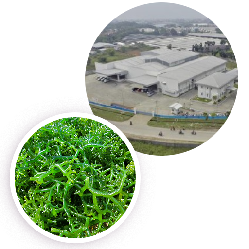
Pelopor Hidrokoloid Berkelanjutan
Mengintegrasikan pemrosesan rumput laut alami Indonesia secara ramah lingkungan untuk menghasilkan produk karagenan standar mutu ekspor global.
Tentang Kami
PT Hydrocolloid Indonesia adalah produsen manufaktur terdepan yang berdedikasi dalam pengolahan rumput laut menjadi produk karagenan berkualitas tinggi untuk memenuhi standar industri pangan, farmasi, dan perawatan diri di skala nasional maupun internasional.
MT / Tahun
Kapasitas Produksi Karagenan
Pasar Ekspor
Distribusi Luar Negeri (Asia/Eropa)
Formulasi Khusus
Varian Tekstur & Blend R&D
Mitra Binaan
Petani Rumput Laut Lokal
Latar Belakang & Sejarah Perusahaan
Berdiri sejak 12 Mei 2010, PT Hydrocolloid Indonesia lahir dari potensi besar Indonesia sebagai salah satu negara penghasil rumput laut terbesar di dunia. Perusahaan ini hadir untuk memberikan nilai tambah (value-added) pada hasil kelautan lokal melalui penerapan teknologi pengolahan hidrokoloid tingkat tinggi. Didirikan dengan komitmen kuat terhadap hilirisasi industri rumput laut nasional, kami bertransformasi dari fasilitas pengolahan lokal menjadi salah satu produsen serta eksportir karagenan (carrageenan) terpercaya di Asia Tenggara yang melayani berbagai sektor manufaktur modern.
Visi & Misi Kami
Visi
Menjadi produsen dan penyedia solusi karagenan terintegrasi kelas dunia yang menghadirkan inovasi tekstur, kualitas tinggi, dan keberlanjutan bagi industri global.
Misi
Produk Unggulan Kami
Pencapaian & Keunggulan
Dengan memadukan kekayaan laut Indonesia, teknologi pengolahan modern, serta kontrol kualitas yang konsisten, PT Hydrocolloid Indonesia siap menjadi partner manufaktur jangka panjang yang andal untuk mendukung kesuksesan bisnis Anda.
Produk
Solusi Produk Karagenan Presisi untuk Industri Anda
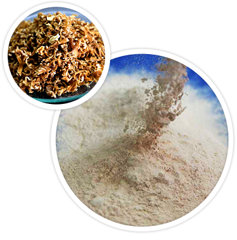
Karagenan yang Dirancang Khusus untuk Kebutuhan Produksi Anda
Kami menyediakan bahan dasar karagenan berkualitas tinggi dengan efisiensi biaya optimal bagi para blender, formulator, penyedia solusi, dan industri pengolahan lanjutan.
Didukung oleh fasilitas produksi berstandar internasional dengan teknologi mutakhir dan sistem jaminan kualitas yang ketat, PT Hydrocolloid Indonesia mampu menghadirkan karagenan yang diformulasikan sesuai kebutuhan spesifik Anda.
Keunggulan Utama: Karagenan food grade 200 mesh yang dikenal sebagai E407a / Processed Eucheuma Seaweed (PES) untuk dispersi halus dan daya jeli yang stabil.
Aplikasi Olahan Daging
Meningkatkan daya ikat air (water binding), kenyalan, serta tekstur pada sosis, bakso, kornet, dan produk olahan daging lainnya.
Aplikasi Olahan Susu (Dairy)
Memberikan emulsi yang stabil, mencegah pemisahan whey, serta memberikan tekstur lembut pada es krim, yoghurt, dan susu cokelat.
Cemilan & Makanan Manis
Formulasi ideal untuk pembentukan gel transparan yang kokoh dan elastis pada produk jeli, agar-agar, permen kenyal, dan puding.
Aplikasi Produk Roti & Bakery
Meningkatkan retensi kelembaban adonan, memperpanjang masa simpan, serta memperbaiki kelembutan struktur roti dan keik.
Kesehatan & Kecantikan
Bahan pengental dan penstabil alami untuk kapsul lunak (farmasi), pasta gigi, krim wajah, dan lotion perawatan diri.
Industri Makanan Hewan
Solusi karagenan custom blend efisien untuk pengental makanan hewan (pet food) serta berbagai formulasi teknis industri.
Proses Produksi
Tahapan alur proses pengolahan rumput laut menjadi produk semi-refined carrageenan (SRC) berkualitas tinggi secara terintegrasi di PT Hydrocolloid Indonesia.
Penerimaan & Pemeriksaan
Pengecekan sampel kualitas bahan baku rumput laut (moisture & pengotor), penimbangan, dan penyimpanan di gudang bahan baku.
Pra-Pencucian & Pemasakan
Pembersihan pasir pada sand filter, pengikatan kotoran via magnetic trap 1, serta ekstraksi/pemasakan rumput laut dengan KOH.
Netralisasi & Pencucian
Netralisasi tingkat pH dan pencucian bertahap (3x washing) untuk memastikan tidak ada sisa residu alkali yang tertinggal.
Pengeringan & Pemotongan (CCP 1)
Pengeringan suhu 75°C (sterilisasi mikrobiologi CCP 1), pemotongan chip, serta penyaringan kontaminasi logam dengan metal separator.
Penepungan & Pencampuran WIP
Penghalusan menjadi bubuk halus, penyaringan ukuran mesh (sifter), dan pencampuran produk WIP kemasan 25 kg.
Pengemasan & CCP 2
Pencampuran akhir sesuai spesifikasi spesifik pelanggan, pengemasan, serta inspeksi deteksi logam (Metal Detector CCP 2).
Klien Yang Bekerja Sama Dengan Kami
Mitra industri dan perusahaan terpercaya yang menggunakan solusi hidrokoloid kami.


Keberlanjutan
Kami berkomitmen untuk terus meningkatkan kesinambungan sebagai bagian dari operasi harian. Bersama dengan pemasok dan pelanggan, kami berupaya menciptakan bahan baku pangan yang berkesinambungan untuk dunia dan generasi mendatang.
Pengelolaan Lingkungan
Menerapkan proses manufaktur ramah lingkungan dengan efisiensi energi, pengelolaan limbah pengolahan rumput laut, dan menjaga kelestarian ekosistem pesisir.
Mendukung SDG:
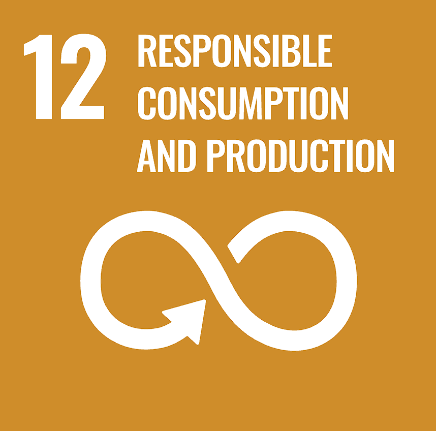
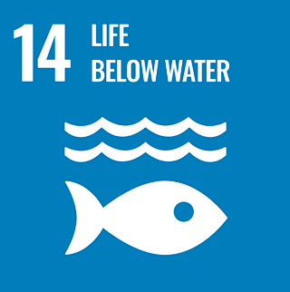
Dampak Sosial
Memperkuat kemitraan dengan pembudidaya rumput laut lokal di Indonesia melalui perdagangan yang adil, pelatihan mutu, dan peningkatan kesejahteraan komunitas pesisir.
Mendukung SDG:
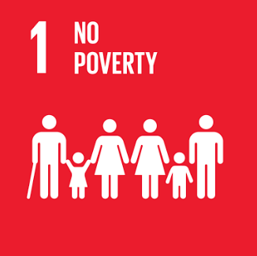
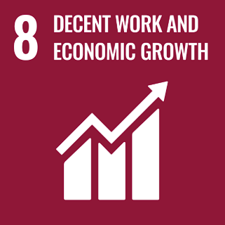
Produk Bermutu
Menjamin mutu keamanan pangan (Food Safety) tinggi melalui riset R&D berkelanjutan serta sertifikasi Halal dan ISO untuk kesehatan konsumen global.
Mendukung SDG:
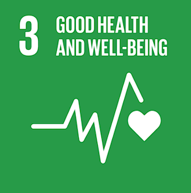
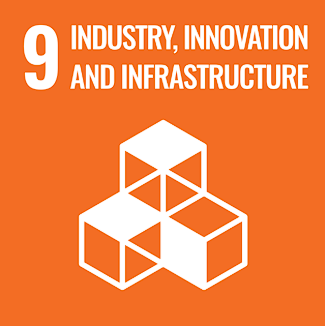
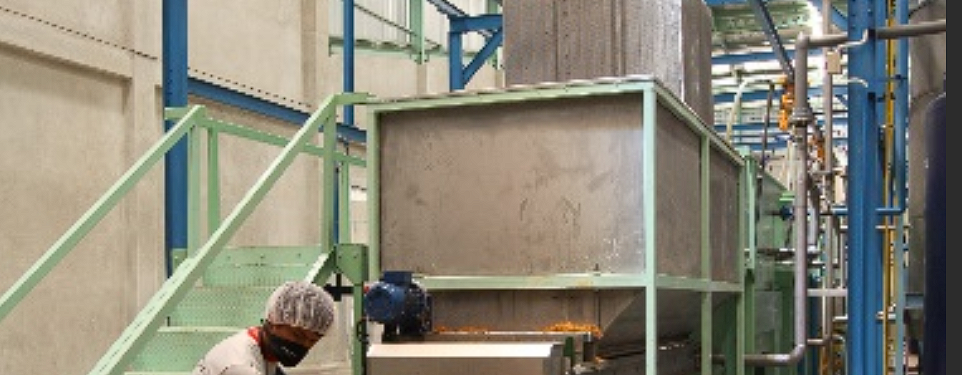
Efisiensi Air
Air adalah bagian penting dalam proses produksi sehingga penggunaannya diawasi dan diukur. Kami menerapkan daur ulang kondensat uap sebagai bahan boiler serta pemanfaatan air rumah tangga untuk penyiraman tanaman.
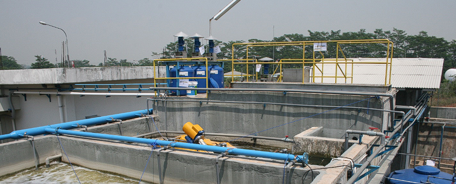
Pengolahan Limbah
Pabrik dilengkapi fasilitas WWTP untuk memastikan limbah cair memenuhi ambang batas regulasi. Limbah plastik didaur ulang secara berkesinambungan prinsip 3R (Reduce, Reuse, Recycle).
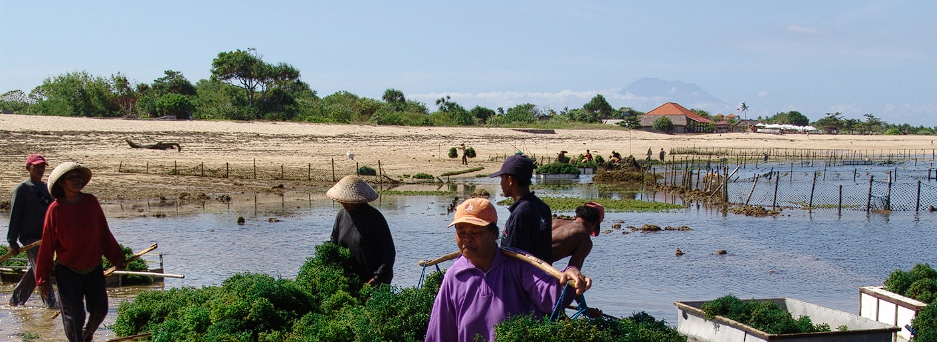
Budidaya Rumput Laut
Bekerja sama dengan pemerintah memberikan pelatihan budidaya yang benar, menjaga area tanam dari ancaman polusi/pestisida agar rantai pasok pengadaan berjalan baik.
Keamanan Pangan
Menerapkan sistem manajemen keamanan pangan komprehensif (HACCP, SKP, FSSC 22000) di seluruh rantai produksi.
Sertifikasi Halal
Seluruh produk terjamin Halal, memberikan rasa aman bagi konsumen nasional maupun global.
Kemasan Standar Mutu
Kemasan memenuhi standar keamanan pangan untuk menjaga kualitas produk selama masa simpan.
Berita & Acara
Informasi terbaru mengenai partisipasi pameran, event industri, dan perkembangan PT Hydrocolloid Indonesia.
Struktur Organisasi & Tim Kami
Susunan kepemimpinan dan profil profesional PT Hydrocolloid Indonesia
STRUKTUR ORGANISASI
-
Direktur Utama
- Direktur
- Direktur
-
Plant Manager
-
Manager ProduksiSupervisor ProduksiProduksi
-
Manager Perijinan
Exim & LogisticSupervisor Perijinan
Exim & LogisticPerijinan Exim &
Logistic -
Manager ProcurementSupervisor ProcurementProcurement
-
Manager PPIC & Warehouse
-
Supervisor PPICPPIC
-
Supervisor WarehouseWarehouse
-
-
Manager Gudang BaliSupervisor Gudang BaliGudang Bali
-
Manager R&D + QCSupervisor R&D + QCR&D + QC
-
Manager EngineeringSupervisor EngineeringEngineering
-
Manager ITSupervisor ITIT
-
Manager Finance, Accounting
& General PurchasingSupervisor Finance, Accounting
& General Purchasing- Finance
- Accounting
- General Purchasing
-
Manager Sales &
MarketingSupervisor Sales &
MarketingSales & Marketing -
Manager Umum &
PersonaliaSupervisor Umum &
PersonaliaUmum & Personalia
-
Pertanyaan yang Sering Ditanyakan
Temukan jawaban atas pertanyaan yang sering diajukan mengenai produk Semi Refined Carrageenan (SRC), standar kualitas, dan sistem pemesanan di PT Hydrocolloid Indonesia.
Butuh Bantuan Lain?
Tim Sales & Technical SupportTidak menemukan jawaban yang Anda cari? Tim spesialis aplikasi hidrokoloid kami siap membantu formulasi produk Anda.
Hubungi Tim Kami1. Produk apa saja yang dihasilkan oleh PT Hydrocolloid Indonesia?
Kami memproduksi produk karagenan tipe Semi Refined Carrageenan (SRC) berkualitas tinggi (seperti merk Hycogel dan Hycovis) dari rumput laut jenis Kappaphycus alvarezii (cottonii) dan Eucheuma denticulatum (spinosum) yang digunakan sebagai pengental, penstabil, dan pembentuk gel pada industri pangan, farmasi, serta perawatan diri.
2. Sertifikasi dan standar kualitas apa saja yang dimiliki perusahaan?
PT Hydrocolloid Indonesia telah tersertifikasi ISO 9001:2015, FSSC 22000, HACCP, SKP, serta memiliki Sistem Jaminan Halal (100% Produk Halal) untuk menjamin keamanan pangan dan konsistensi mutu produk di skala nasional maupun internasional.
3. Bagaimana sistem pemesanan produk di PT Hydrocolloid Indonesia?
Kami menerapkan sistem Make To Order (MTO) untuk pemesanan kuantitas besar yang dapat disesuaikan spesifikasinya (custom formulation), serta sistem Make To Stock (MTS) untuk memenuhi kebutuhan produk standar dan pengadaan dalam kuantitas yang lebih kecil secara cepat.
4. Apakah PT Hydrocolloid Indonesia melayani pengiriman ekspor luar negeri?
Ya, sebanyak 80% dari total produksi kami didistribusikan untuk pasar ekspor ke berbagai negara di Asia, Eropa, hingga Amerika. Pengiriman luar negeri diproses hingga ke pelabuhan penyerahan yang disepakati (FOB/CIF).
5. Bagaimana cara mengajukan permintaan sampel atau konsultasi spesifikasi teknis?
Anda dapat menghubungi tim sales & marketing kami melalui formulir kontak di bagian bawah website ini, atau mengirimkan email langsung ke info@hydrocolloid-indonesia.com untuk diskusi spesifikasi gel strength, viskositas, dan pengiriman sampel.
Kontak
Tertarik dengan perusahaan dan produk kami? Anda dapat menghubungi kami pada kontak berikut!


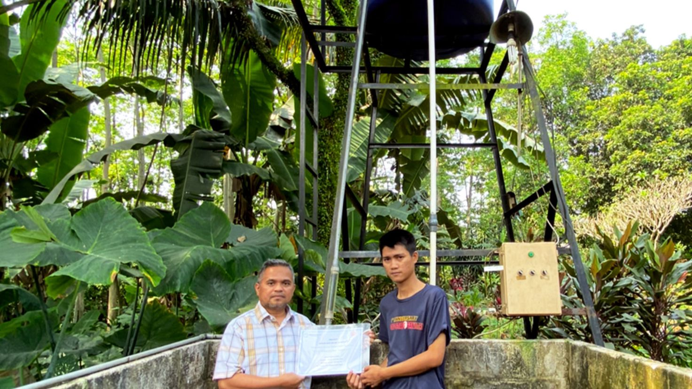
Tumbuh Bersama Masyarakat
PT Hydrocolloid Indonesia hadir untuk dapat bertumbuh bersama karyawan dan masyarakat serta memberi kontribusi nyata menciptakan lingkungan yang lebih baik.